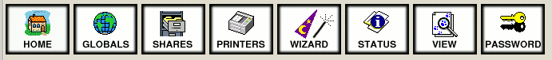

Samba Server Swat
Archivierte Anleitung
Dieser Artikel wurde archiviert, da er - oder Teile daraus - nur noch unter einer älteren Ubuntu-Version nutzbar ist. Diese Anleitung wird vom Wiki-Team weder auf Richtigkeit überprüft noch anderweitig gepflegt. Zusätzlich wurde der Artikel für weitere Änderungen gesperrt.
Zum Verständnis dieses Artikels sind folgende Seiten hilfreich:
SWAT (Samba Web Administration Tool) ist seit Version 2.0 von Samba das offizielle Webinterface für Samba. SWAT ermöglicht also das Bearbeiten der /etc/samba/smb.conf ohne einen Texteditor verwenden zu müssen.
Möchte man auf einem Rechner mit eigener grafischer Oberfläche (GUI, z.B. Unity, GNOME, Xfce ...) Samba-Freigaben einrichten oder die Datei smb.conf bearbeiten, dann stellt oftmals system-config-samba gegenüber SWAT die einfachere Möglichkeit dar.
Hinweis:
Im Zusammenhang mit Samba 4 (ab Ubuntu 14.04 Standard) treten mit SWAT häufig Probleme auf. Die derzeitige Version gilt deshalb als veraltet und unsicher. Ob SWAT weiter gewartet oder ganz aus den Paket entfernt werden soll, ist noch nicht entschieden (Stand: Februar 2015).
Installation¶
Um SWAT verwenden zu können, muss natürlich lokal Samba als Server installiert sein. Folgende Pakete werden für Swat selbst benötigt:
swat
openbsd-inetd (oder ein anderer inetd Dienst)
Ab Ubuntu 14.04 LTS ist SWAT nicht mehr in den Paketquellen vorhanden.
Konfiguration¶
Konfiguration vom inetd¶
Damit SWAT problemlos gestartet werden kann, muss folgender Eintrag in der Datei /etc/services vorhanden sein:
swat 901/tcp # swat
In der Datei /etc/inetd.conf ist folgender Eintrag nötig:
swat stream tcp nowait.400 root /usr/sbin/swat swat
Hinweis:
Die Änderungen an der /etc/services sowie der /etc/inetd.conf sind normalerweise nicht nötig, da dies schon bei der Installation der Pakete der Fall ist.
Um die Änderungen zu übernehmen muss der inetd natürlich neu gestartet werden, dies ist auch der Fall wenn swat und openbsd-inetd gleichzeitig installiert wurden, da der inetd in der Regel zuerst konfiguriert wurde.
sudo /etc/init.d/openbsd-inetd restart # Wenn man einen anderen inetd verwendet, ist der Befehl natürlich anzupassen!
Vorbereiten der smb.conf¶
Standardmäßig hat die /etc/samba/smb.conf unter Ubuntu folgende Rechte:
-rw-r--r-- 1 root root 1,1K 2007-12-20 20:59 /etc/samba/smb.conf
Leider ist damit jedoch nicht das Bearbeiten der /etc/samba/smb.conf möglich, da es unter Ubuntu ja keinen richtigen root-Benutzer gibt. Um das Bearbeiten der /etc/samba/smb.conf lokalen Benutzern mit Administratorrechten zu erlauben, ist folgendes nötig:
sudo chown root:admin /etc/samba/smb.conf sudo chmod 664 /etc/samba/smb.conf
Dies ist jedoch nur nötig wenn man Swat verwenden möchte und sollte auch nur dann gemacht werden.
Achtung!
Auf keinen Fall sollte man für die /etc/samba/smb.conf Lese und Schreibrechte für alle (777) einstellen, da dies ein Sicherheitsrisiko darstellt! Durch das Verändern der Dateirechte wie oben beschrieben ist es außerdem möglich, dass Benutzer der Gruppe admin die Datei auch ohne sudo bearbeiten können. Seit Ubuntu 12.04 ist der Name der Gruppe admin in sudo geändert!
Benutzen von SWAT¶
Mit SWAT verbinden¶
Um sich mit SWAT zu verbinden, öffnet man den Browser seiner Wahl und gibt in der Adressleiste folgendes ein, und meldet sich als Benutzer mit seinem Passwort an.
http://127.0.0.1:901 # Für den Zugriff auf den Rechner an den man sich befindet http://<IP des Rechners>:901 # Für den Zugriff auf den Rechner mit der IP <IP-Nummer>
Hinweis:
Dies funktioniert natürlich nur, wenn keine Firewall oder Proxy die Verbindung blockiert, und wenn auch der inetd Dienst läuft.
Achtung!
SWAT verfügt über keinen Logout-Mechanismus, d.h. die Verbindung zu SWAT erfordert ziemlich lange kein Passwort mehr, was natürlich ein gewisses Sicherheitsrisiko ist!
Die Oberfläche von SWAT¶

"Home": Dies ist die Startseite von SWAT, hier befindet sich weiter unten auch die Samba-Dokumentation aus dem Paket samba-doc
"Globals": Ermöglicht das bearbeiten der Sektion [global], also den allgemeinen Einstellungen von Samba
"Shares": Ermöglicht das Anzeigen, Erstellen und Löschen von Dateifreigaben
"Printers": Ermöglicht das Bearbeiten der Sektion [printers], also die Druckerfreigaben
"Wizards": Hier gibt es verschiedene Assistenten, um schnell bestimmte Szenarien zu konfigurieren
"Status": Zeigt den Status von Samba, ähnlich zu z.B. smbstatus
"View": Zeigt die aktuelle /etc/samba/smb.conf an
"Password": Verwaltet Benutzernamen und Passwörter
Einschränkungen von SWAT¶
Eine /etc/samba/smb.conf die von SWAT geändert oder erstellt wurde enthält keine Kommentare, diese gehen beim Bearbeiten mit SWAT in der Regel verloren. Auch ist es ratsam, hin und wieder ein Backup der Samba Konfiguration zu machen, insbesondere wenn man SWAT zum ersten Mal verwendet. Dazu wird auch von den Entwicklern und in der Handbuchseite geraten. SWAT kennt auch nicht immer alle Optionen, die in der /etc/samba/smb.conf möglich sind, da SWAT hier der Entwicklung hin und wieder etwas hinterher hinkt. In der Regel stellt dies aber nur bei relativ exotischen Parametern ein Problem dar.
Links¶
Intern¶
Samba Server: Einrichten eines Samba-Servers, auch ohne GUI
Samba Server GNOME: Samba-Freigaben auf Rechnern mit GUI einrichten
Samba Server/smb.conf: Die Samba-Konfigurationsdatei smb.conf

- Erstellt mit Inyoka
-
 2004 – 2017 ubuntuusers.de • Einige Rechte vorbehalten
2004 – 2017 ubuntuusers.de • Einige Rechte vorbehalten
Lizenz • Kontakt • Datenschutz • Impressum • Serverstatus -
Serverhousing gespendet von